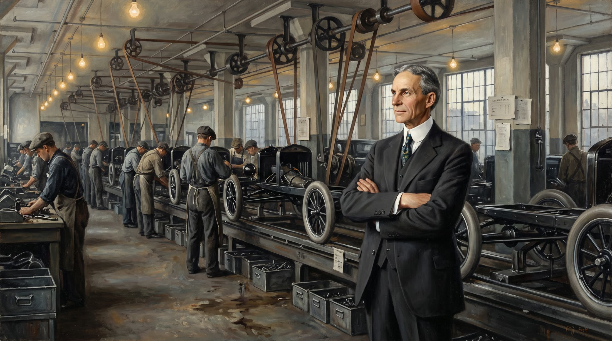
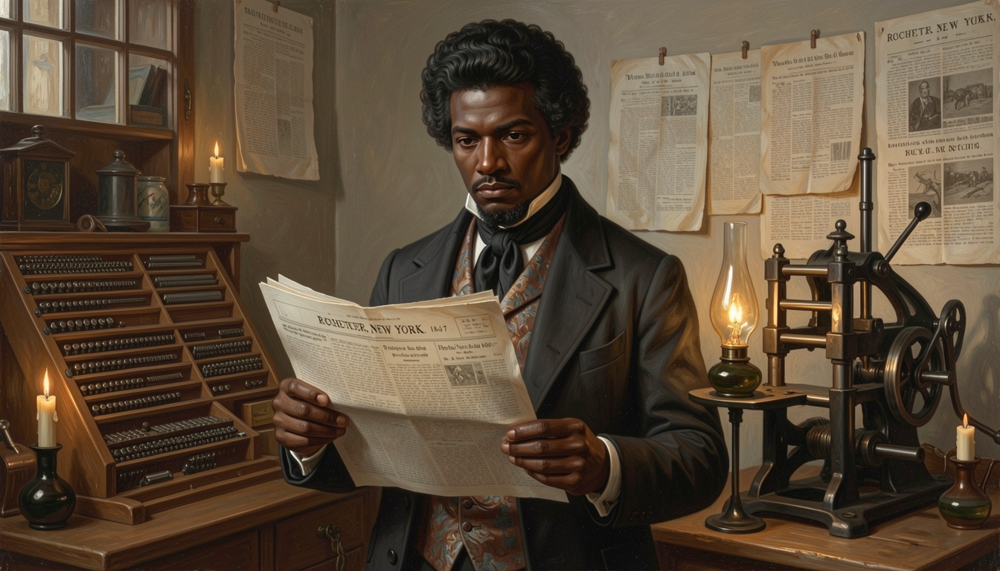
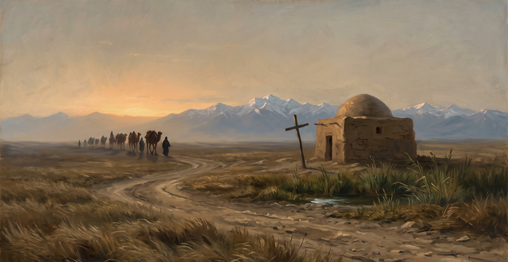
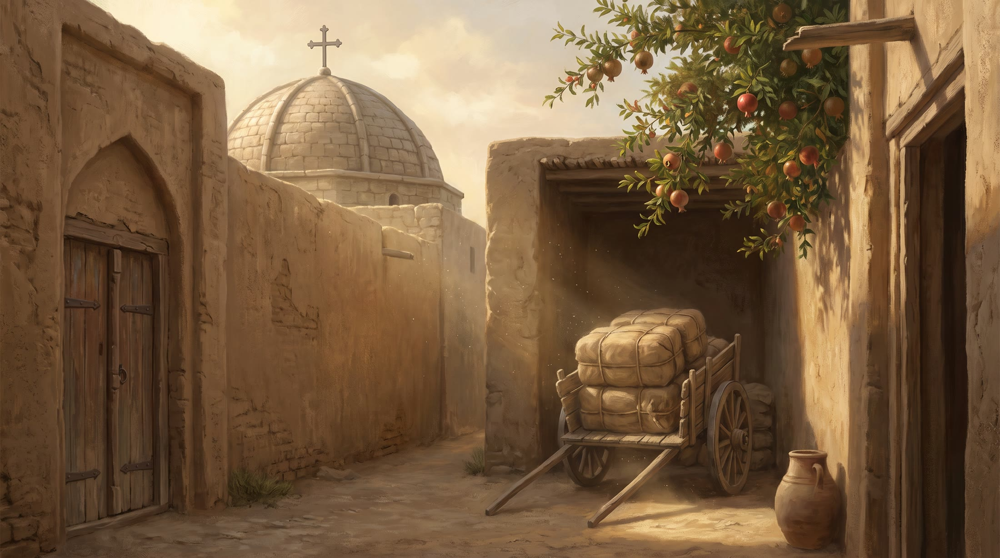

The Council asked for one honest grammar: archive photograph largest and ungraded, reconstructions framed and labelled, one clear "where am I". You asked for cinematic, bold and interactive. This is where those meet: the structure is shared, the voice is not. Each exhibit gets its own display face, its own ink, its own motion, and one centrepiece you can only do there.
Same plan strip, same room template, same reading-level lens, same RECONSTRUCTION tag. Visitors learn it once.
Huge display type (up to 210px) opens every exhibit. Body is always a real serif at 18px+; system voice is a plain sans. One tracked-caps label only: RECONSTRUCTION.
No static charts. Every number is a control: drag, scrub, set type, pin a place. Numbers come from the evidence ledger and carry their confidence.
One slow drift on the hero, short slides between rooms, 4-second skippable entrance. Reduced motion becomes cuts.
Prototype notes: images are the real exhibit paintings (labelled Reconstruction). Figures in the infographics are design-mock placeholders to show behaviour; production versions read their values from each exhibit's claims ledger, with confidence and sources.

He put the world on wheels and Detroit at the centre of the machine age. The whole record is here.
Scrub from the bench-built car to the moving line. Watch a chassis crawl past the stations, and the hours, the price and the output fall together. In production, each stage opens the photograph, the worker's job and the claim behind the number.
Mock values (hours 12.7 → 1.5, price $850 → $260). The real build reads dated, sourced figures from the Ford ledger, shows range and confidence, and links each stage to its archive photograph.

A man who taught himself to read, and then set the words in type himself.
Pick up the type. Each letter you press lands on the printed page with a thud, in the wood and slab faces of the 1840s. Set the line, then read the speech around it at your own reading level. Nobody else's exhibit has you doing the work of the printer.
The line is from the 1852 Rochester address, public domain. Production adds the full speech, a typeset-by-word audio read, and "what the printer would have had to choose".

A church that walked the Silk Road, in three scripts, for a thousand years.
Tap a stage on the route. The line extends, the script on the card changes to the one used there, and the room behind opens. Real scripts at full size, with the reading beside them. A second script is never decoration.
Schematic route, not a survey map. Production uses a real historical basemap, dated sources per stop and the verified stele text.

تقسیمِ ہند · भारत का विभाजन · ਭਾਰਤ ਦੀ ਵੰਡ
A lawyer who had never been to India was given about five weeks to divide Punjab and Bengal. Draw your own boundary between the same two ends Radcliffe had, then lay his over it and see which towns land on a different side.
Now the real thing: a 1948 Foreign Office map (public-domain tag, rights review pending) with Radcliffe's printed lines isolated by colour, not redrawn. Town positions are approximate. No people are shown, and all numbers about the violence are contested ranges. This exhibit needs a South Asian historian's review before it ships.